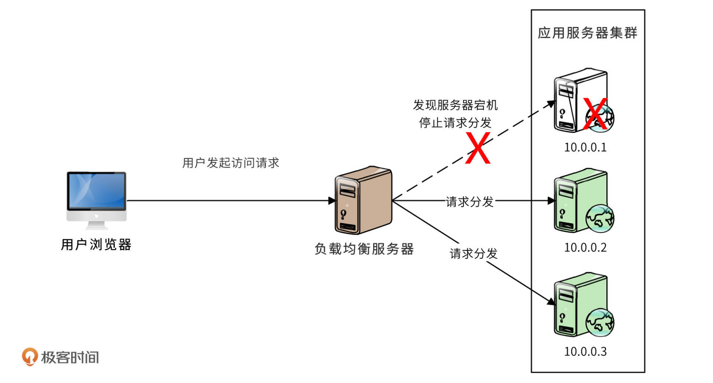

- 00 开篇词 “附身”大厂架构师，身临其境设计高并发系统.md
- 01 软件建模与文档：架构师怎样绘制系统架构蓝图？.md
- 02 高并发架构设计方法：面对高并发，怎么对症下药？.md
- 03 短 URL 生成器设计：百亿短 URL 怎样做到无冲突？.md
- 04 网页爬虫设计：如何下载千亿级网页？.md
- 05 网盘系统设计：万亿 GB 网盘如何实现秒传与限速？.md
- 06 短视频系统设计：如何支持三千万用户同时在线看视频？.md
- 07 海量数据处理技术回顾：为什么分布式会遇到 CAP 难题？.md
- 08 秒杀系统设计：你的系统可以应对万人抢购盛况吗？.md
- 09 交友系统设计：哪种地理空间邻近算法更快？.md
- 10 搜索引擎设计：信息搜索怎么避免大海捞针？.md
- 11 反应式编程框架设计：如何使方法调用无阻塞等待？.md
- 12 高性能架构的三板斧：分析系统性能问题从哪里入手？.md
- 13 微博系统设计：怎么应对热点事件的突发访问压力？.md
- 14 百科应用系统设计：机房被火烧了系统还能访问吗？.md
- 15 限流器设计：如何避免超预期的高并发压力压垮系统？.md
- 16 高可用架构的十种武器：怎么度量系统的可用性？.md
- 17 Web 应用防火墙：怎样拦截恶意用户的非法请求？.md
- 18 加解密服务平台：如何让敏感数据存储与传输更安全？.md
- 19 许可型区块链重构：无中心的区块链怎么做到可信任？.md
- 20 网约车系统设计：怎样设计一个日赚 5 亿的网约车系统？.md
- 21 网约车系统重构：如何用 DDD 重构网约车系统设计？.md
- 22 大数据平台设计：如何用数据为用户创造价值？.md
- 结束语 一个架构师的一天.md
16 高可用架构的十种武器：怎么度量系统的可用性？
你好，我是李智慧。
互联网应用是面向一般大众的应用系统，他们可能会随时需要使用应用，那么应用就必须要保持随时可用，即所谓的$\small 7\times24$小时可用。但是互联网应用又可能会遇到硬件故障、软件故障、黑客攻击等等各种不可用的场景。
业界通常用多少个9来说明互联网应用的可用性。比如说淘宝的可用性是4个9，就是说淘宝的服务99.99%可用。这句话的意思是，淘宝的服务要保证在所有的运行时间里只有0.01%不可用，那么一年就只有大概53分钟不可用。这个99.99%就叫做系统的可用性指标，这个值的计算公式是：$\small 可用性指标=（1-年度不可用时间\div年度总时间）\times100%$
可用性指标反映系统的可用程度，也可以估算出年度不可用时间。我们熟悉的互联网产品（淘宝、百度、微信等）的可用性大多是4个9。
不同的应用可用性可能会相差很大，主要差别就是在面对各种故障的时候，高可用设计做得是否足够好，我总结了一些高可用架构的技术方案，并称之为高可用架构的十种武器。
第一种武器：解耦
耦合度过高是软件设计的万恶之源，也是造成系统可用性问题的罪魁祸首。一个高度耦合的系统，牵一发而动全身，任何微小的改动都可能会导致意想不到的bug和系统崩溃。连最基本的功能维护都已经勉为其难，更不用奢谈什么高可用了。
历数软件技术进化史，就是一部软件开发解耦的历史。从汇编语言到面向过程的语言，再到面向对象的语言，编程语言的要素本身就越来越低耦合。各种编程框架的出现也几乎只有一个目标：使软件变得更加低耦合。Web应用容器使得HTTP协议处理与业务开发解耦，开发者不需要关注网络通信和协议处理，只需要关注请求和响应对象的逻辑处理即可。MVC框架进一步将视图逻辑与业务逻辑解耦，前后端工作进一步分离。
这里，我再介绍两种低耦合的设计原则。
组件的低耦合原则：无循环依赖原则，即技术组件之间不能循环依赖，不能A依赖B，B又依赖A；稳定依赖原则，即被依赖的组件尽量稳定，尽量少因为业务变化而变化；稳定抽象原则，即要想使组件稳定，组件就要更加抽象。
面向对象的低耦合原则：开闭原则，即对修改封闭、对扩展开放，对象可以扩展新功能，但是不能修改代码；依赖倒置原则，即高层对象不能依赖低层对象，而是要依赖抽象接口，而抽象接口属于高层；接口隔离原则，不要强迫使用者依赖它们不需要的方法，要用接口对方法进行隔离。
第二种武器：隔离
如果说解耦是逻辑上的分割，那么隔离就是物理上的分割。即将低耦合的组件进行独立部署，将不同组件在物理上隔离开来。每个组件有自己独立的代码仓库；每个组件可以独立发布，互不影响；每个组件有自己独立的容器进行部署，互不干扰。
所以，隔离就是分布式技术在业务上的应用，最常见的就是我们前面案例中也多次使用的微服务技术方案。微服务将一个复杂的大应用（单体架构系统）进行拆解，拆分成若干更细粒度的微服务，这些微服务之间互相依赖，实现原来大应用的功能逻辑。然后将这些微服务独立开发和发布，独立部署，微服务之间通过RPC（远程过程调用）进行依赖调用，就是微服务架构。
隔离使得系统间关系更加清晰，故障可以更加隔离开来，问题的发现与解决也更加快速，系统的可用性也更高。
不过，还要强调一下，隔离必须在低耦合的基础上进行才有意义。如果组件之间的耦合关系千头万绪、混乱不堪，隔离只会让这种混乱更雪上加霜。
第三种武器：异步
异步可以认为是在隔离的基础上进一步解耦，将物理上已经分割的组件之间的依赖关系进一步切断，使故障无法扩散，提高系统可用性。异步在架构上的实现手段主要是使用消息队列。
比如用户注册的场景。新用户提交注册请求后，需要给用户发送邮件，发送短信，保存数据库，还要将注册消息同步给其他产品等等。如果用微服务调用的方式，那么后续操作任何一个故障，都会导致业务处理失败，用户无法完成注册。
使用消息队列的异步架构，新用户注册消息发送给消息队列就立即返回，后续的操作通过消费消息来完成，即使某个操作发生故障也不会影响用户注册成功。如下图。

第四种武器：备份
备份主要解决硬件故障下系统的可用性，即一个服务部署在多个服务器上，当某个服务器故障的时候，请求切换到其他服务器上继续处理，保证服务是可用的。所以，备份与失效转移（failover）总是成对出现的，共同构成一个高可用解决方案。
最常见的备份就是负载均衡，前面的课程中说过，负载均衡主要解决高性能问题。但是，多台服务器构成一个集群，这些服务器天然就是互相备份的关系，任何一台服务器失效，只需要将分发到这台服务器的请求分发给其他服务器即可，如下图

由于应用服务器上只运行程序，不存储数据，所以请求切换到任何一台服务器，处理结果都是相同的。而对于存储数据的服务器，比如数据库，互相备份的服务器必须要互相同步数据，下图是MySQL主主备份的架构图。

第五种武器：重试
远程服务可能会由于线程阻塞、垃圾回收或者网络抖动，而无法及时返回响应，调用者可以通过重试的方式修复单次调用的故障。
需要注意的是，重试是有风险的。比如一个转账操作，第一次请求转账后没有响应，也许仅仅是响应数据在网络中超时了，如果这个时候进行重试，那么可能会导致重复转账，反而造成重大问题。
所以，可以重试的服务必须是幂等的。所谓幂等，即服务重复调用和调用一次产生的结果是相同的。有些服务天然具有幂等性，比如将用户性别设置为男性，不管设置多少次，结果都一样。
第六种武器：熔断
重试主要解决偶发的因素导致的单次调用失败，但是如果某个服务器一直不稳定，甚至已经宕机，再请求这个服务器或者进行重试都没有意义了。所以为了保证系统整体的高可用，对于不稳定或者宕机的服务器需要进行熔断。
熔断的主要方式是使用断路器阻断对故障服务器的调用，断路器状态图如下。

断路器有三种状态，关闭、打开、半开。断路器正常情况下是关闭状态，每次服务调用后都通知断路器。如果失败了，失败计数器就+1，如果超过开关阈值，断路器就打开，这个时候就不再请求这个服务了。过一段时间，达到断路器预设的时间窗口后，断路器进入半开状态，发送一个请求到该服务，如果服务调用成功，那么说明服务恢复，断路器进入关闭状态，即正常状态；如果服务调用失败，那么说明服务故障还没修复，断路器继续进入到打开状态，服务不可用。
第七种武器：补偿
前面几种方案都是故障发生时如何处理，而补偿则是故障发生后，如何弥补错误或者避免损失扩大。比如将处理失败的请求放入一个专门的补偿队列，等待失败原因消除后进行补偿，重新处理。
补偿最典型的使用场景是事务补偿。在一个分布式应用中，多个相关事务操作可能分布在不同的服务器上，如果某个服务器处理失败，那么整个事务就是不完整的。按照传统的事务处理思路，需要进行事务回滚，即将已经成功的操作也恢复到事务以前的状态，保证事务的一致性。
传统的事务回滚主要依赖数据库的特性，当事务失败的时候，数据库执行自己的undo日志，就可以将同一个事务的多条数据记录恢复到事务之初的状态。但是分布式服务没有undo日志，所以需要开发专门的事务补偿代码，当分布式事务失效的时候，调用事务补偿服务，将事务状态恢复如初。
第八种武器：限流
在高并发场景下，如果系统的访问量超过了系统的承受能力，可以通过限流对系统进行保护。限流是指对进入系统的用户请求进行流量限制，如果访问量超过了系统的最大处理能力，就会丢弃一部分用户请求，保证整个系统可用。这样虽然有一部分用户的请求被丢弃，但大部分用户还是可以访问系统的，总比整个系统崩溃，所有的用户都不可用要好。
我们在[第15篇]专门讨论过限流器的设计，这里不再赘述。
第九种武器：降级
降级是保护系统高可用的另一种手段。有一些系统功能是非核心的，但是也给系统产生了非常大的压力，比如电商系统中有确认收货这个功能，即便用户不确认收货，系统也会超时自动确认。
但实际上确认收货是一个非常重的操作，因为它会对数据库产生很大的压力：它要进行更改订单状态，完成支付确认，并进行评价等一系列操作。如果在系统高并发的时候去完成这些操作，那么会对系统雪上加霜，使系统的处理能力更加恶化。
解决办法就是在系统高并发的时候（例如淘宝双十一），将确认收货、评价这些非核心的功能关闭，也就是对系统进行降级，把宝贵的系统资源留下来，给正在购物的人，让他们去完成交易。
第十种武器：多活
多活，即异地多活，在多个地区建立数据中心，并都可以对用户提供服务，任何地区级的灾难都不会影响系统的可用。异地多活的架构案例我们已经在[第14讲]讨论过了。异地多活最极端的案例，是某应用准备将自己的服务器发射到太空，即使地球毁灭也能保证系统可用。
异地多活的架构需要考虑的重点是，用户请求如何分发到不同的机房去。这个主要可以在域名解析的时候完成，也就是用户进行域名解析的时候，会根据就近原则或者其他一些策略，完成用户请求的分发。另一个至关重要的技术点是，因为是多个机房都可以独立对外提供服务，所以也就意味着每个机房都要有完整的数据记录。用户在任何一个机房完成的数据操作，都必须同步传输给其他的机房，进行数据实时同步。
数据库实时同步最需要关注的就是数据冲突问题。同一条数据，同时在两个数据中心被修改了，该如何解决？某些容易引起数据冲突的服务采用类似MySQL的主主模式，也就是说多个机房在某个时刻是有一个主机房的，某些请求只能到达主机房才能被处理，其他的机房不处理这一类请求，以此来避免关键数据的冲突。
小结
除了以上的高可用架构方案，还有一些高可用的运维方案。
通过自动化测试减少系统的Bug。对于一个稳定运行的系统，每次变更发布可能只改动极小的一部分，如果只测试这一小部分的功能，那么潜在的其他可能引起故障的连带变更就会被忽视，进而可能引发大问题。但是如果全部都回归测试一遍，投入的测试成本又非常高。自动化测试可以实现自动化回归，对于那些没有变更的功能，自动发现是否有引入的Bug或预期之外的变更。
通过自动化监控尽早发现系统的故障。监控系统是技术团队的眼睛，没有监控的系统犹如盲人在崎岖的山路狂奔。所以，一个成熟的高可用系统中必定包含着完整的监控系统，实时监控各种技术指标和业务指标的变化。如果系统出现故障，超过设定的阈值就会引发监控系统报警，或者启动自动化故障修复服务。
通过预发布验证发现测试环境无法发现的Bug。系统在发布上线之前要经过各种测试，但是测试环境和线上运行环境还是会有很多不同。所以需要在线上集群中部署一台专门的预发布服务器，这台服务器访问的数据和资源完全是线上的，但是不会被用户访问到。开发人员发布代码的时候，先发布到这台预发布服务器，然后在这台服务器上做预发布验证，没有问题才会将代码发布到其他服务器上；如果有问题，也不会影响到用户访问，保证系统的高可用。
此外还可以通过灰度发布降低软件错误带来的影响。在一个大规模的应用集群中，每次只发布一小部分服务器，观察没有问题，再继续发布，保证即使程序有Bug，产生的影响也控制在较小的范围内。
思考题
你还能想到哪些文中没有提到的高可用方法？
欢迎在评论区补充你的思考，我们共同进步。
© 2019 - 2023 Liangliang Lee. Powered by Vert.x and hexo-theme-book.